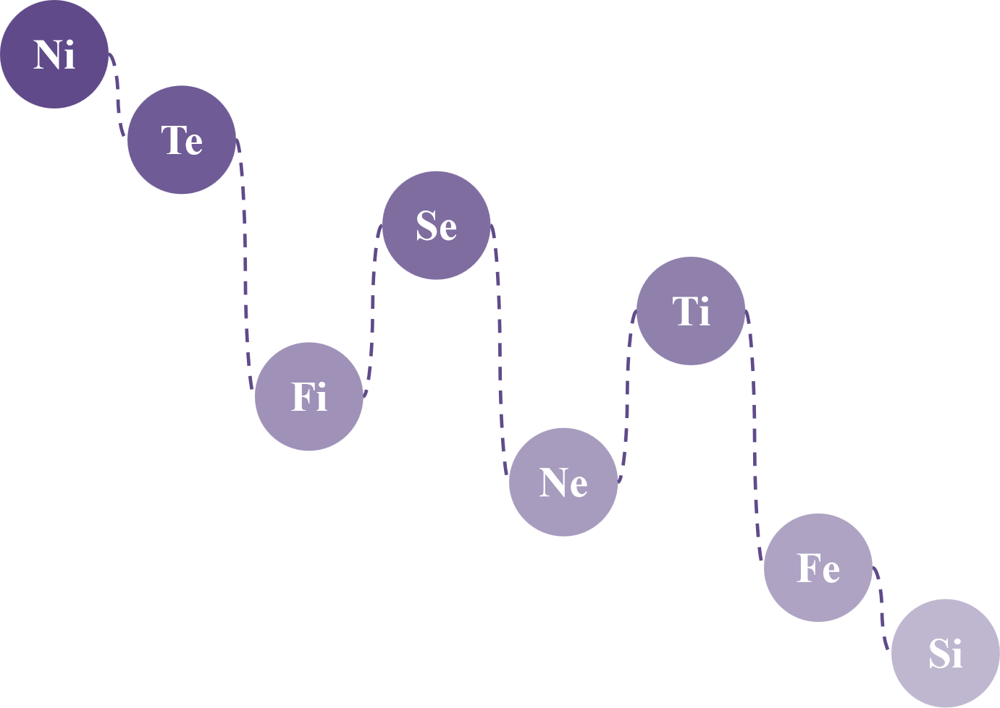
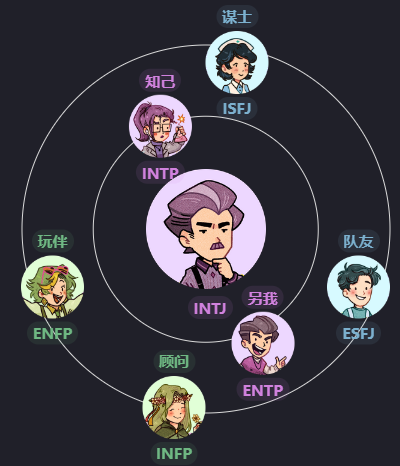
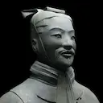

INTJ
建筑师
INTJ 是理性的“建筑师”，重视智慧、知识和能力。他们致力于理解新的复杂思想和概念，并制定有效的策略以实际应用。 INTJ 往往是有远见的，关注未来的可能性并在想法上有飞跃。他们常被形容为独立、果断、自信和雄心勃勃，通常在涉及战略规划、工程、科学或商业的职业中取得优异成果。
Ni和Te是INTJ的优势
认知功能和个体收集信息，做出决策并与外部世界互动的过程息息相关。 内倾直觉（Ni）和外倾思维（Te）是INTJ的主导和辅助认知功能，是INTJ的优势，含义和使命。
🍃独立的
🍃反主流
🍃有野心的I人
🍃浪漫思想家
🍃暗中诗意且感性
🍃嘲讽
🍃战略思维
🍃决定主义者
🍃骄傲
🍃面向未来
🍃看起来险恶但实际是甜心
🍃班里的安静孩子
🍃有远见的人
🍃神童
🍃猫咪爱好者
主导的Ni使INTJ能够建模并预测未来结果。比起具体细节，他们对底层逻辑更感兴趣。 辅助的Te让INTJ高效地实现其目标。抽象思维之外，他们也注重客观数据和事实。
INTJ的认知功能

🔮Ni就像远见家，他可以通过对世界及对世界的潜在模式和法律的更深入的了解来逃脱和超越当前情况的局限性。它是直观的和有见地的，能够从有意识和潜意识的思想中收集和综合信息，以产生敏锐的印象和见解。它重视生活的解释和促进理解，并且在各个领域都有创造力。
如何发展Ni:可视化、模式识别、未来计划
主导功能是一个人最发达、最舒适和最本能的功能，它作为他们感知或判断世界的主要方式。它在童年的时期形成，并成为人们的主要任务，因此通常是最健康和最强大的功能，因此被昵称为“英雄”。
主导性的内向直觉（Ni）功能使得INTJ能够分析模式并预测未来结果。他们倾向于面向未来和具有远见，对愿景含义主题比具体细节更感兴趣。他们可能将事件归因于命运，并专注于相关信息以实现目标，但可能不太注重细节。他们可能会在向他人解释逻辑之前与他人分享结论，并经常显得比其他人领先几步。
🤺Te就像利刃出鞘，准备解决挑战和困难。Te专注于使用明确的逻辑，包括标准化方法、测量、政策和程序来改善系统和操作。它与解决实际问题、发现和分类事实以及改善公认的想法有关。它重视客观数据和事实，而不是抽象的思维，并依赖于外部来源的声音和价值。Te是有组织、高效和有效的，并且可能被认为是坚定、直接和无情的。
如何发展Te：设定明确的目标、组织信息、解决问题
辅助功能被昵称为“好父母”，因为它通常受到早期青少年时期的良好教养的影响，它帮助主导功能实现其目标，并通过提供不同的观点来平衡它。它在青少年时期和成年早期逐渐发展起来。
辅助外倾思考（Te）有助于INTJ高效有效地实现他们的目标。如果他们认为这样更高效，他们可能会将任务委派给他人，并且他们倾向于有条理和整洁。INTJ喜欢辩论和理论构思，但起初可能显得刻板而冷淡。他们也可能有一些强迫倾向。Te帮助INTJ保持逻辑和客观，但他们可能在处理情绪方面有困难，有时会显得率直或刻薄。
🗻Fi就像富士山一样，具有许多隐藏的力量。Fi探索和完善个人的品味和感受，从而有助于个人的独特感。Fi根据个人喜好为事物分配价值，试图与自己的内在情感标准和价值观保持一致，并专注于保持内在的情感和道德秩序。但是，Fi可能难以向外表达其情绪，可能对他人冷漠或无动于衷。
如何发展Fi：反思价值观、创造性表达、正念实践
第三功能被昵称为“永恒少年”，因为它代表着我们内心那个永恒少年，并与潜意识的精神力量有着特殊的关系，它经常被用作一种防御机制，以保护自己免受不舒服的情绪和感觉，并平衡主导功能和辅助功能。这个功能通常在成年时期达到完全成熟。
内倾情感（Fi）在第三位于INTJ赋予一种自我意识和个人道德观。作为低Fi用户，INTJ可能不知道他们的行为如何影响他人，但他们能够同情那些有着类似经历的人。第三位Fi还导向对家人和朋友的强烈忠诚感和责任感。在消极方面，第三位Fi可能导致INTJ对自己苛刻，并在未能达到其期望时感到失望。
🔥Se就像火一样，寻找新的经历和刺激。Se专注于外部、具体的感官信息，并在当下寻找新的体验和刺激。它与收集有关直接环境的信息有关，并通过与其中的对象进行互动来充满活力。具有强大Se功能的人可能对自己当前的环境有很高的认识，并且很容易参与不仅仅是说话的活动。
如何发展Se：体育活动、感官经历、生活在当下
劣势功能是无意识和被压抑的，以支持主导功能。它是你个性中你不太了解并且可能不愿意承认的“黑暗”方面。对于大多数人来说，这个功能往往在中年后变得更加明显。
劣势位置中的外倾感觉（Se）使INTJ对具体信息不重视，并且难以适应新的情况或专注于当下。他们可能也会在感官享受上过度放纵，并略微渴望冒险，但可能犹豫不决。劣势Se的INTJ可能也对美学有很强的欣赏力。
🎇Ne就像烟花一样，以创造力和可能性的爆发来照亮和扩展思想，引发新的联系和想法。Ne专注于探索情况或想法中潜在的可能性、含义和联系。它旨在以客观和未经过滤的方式理解情况的抽象、隐性品质。Ne具有创新性和开放性，通常以对新思想和可能性的渴望为特征。它可以是艺术、科学、机械或冒险的，并且通常对自我表达感到满意。
如何发展Ne：集思广益、探索新概念、联系想法
对立功能挑战主导功能，可能表现为消极行为，如被动攻击性行为或自我怀疑。它也可能投射到他人身上，导致不信任感。
对立的外倾直觉（Ne）在INTJ的主导Ni视角受到反对或阻碍时出现。虽然Ni专注于特定目标，但Ne提供了替代的可能性和相互联系。INTJ可能最初认为Ne是阻碍或令人烦恼的，但他们可以学会将其视为对他们正常思维方式的“修正”，更加开放地看待一个情况的多种解释。
🗡Ti就像十年磨一剑，不断地磨练和完善其逻辑。Ti使用逻辑来分析和检査技术、问题、概念或理论，以提高个人技能、方法和策略。Ti采用怀疑态度和还原的方法，并关注提出问题、创建理论并研究外部事实如何适合思想或理论的框架。
如何发展Ti：独立分析、逻辑难题、评估论点
批评型父母功能具有超级批评和贬低的特点，经常导致自己或他人感到被拒绝。它可能受到触发器的触发，这些触发器激活了小丑功能。
INTJ的批判位内倾思考（Ti）是INTJ辅助功能Te的对立面。Ti是内心批评或关闭他们基于Te的计划的声音，他们可能认为Ti很挑剔或不灵活。然而，Ti也可以帮助INTJ纠正他们的思维，并考虑到情况中的所有变量。
☀Fe就像太阳一样，变暖并为他人带来生命。Fe根据普遍的、客观的标准重视事物，并抑制个人观点。Fe致力于通过有效的沟通和社会智慧来建立和维持和谐关系。它很容易表达自己，有时可能会出现为真诚或假货。Fe们倾向于共识和稳定性，并可能在其信念中具有强烈的情感信念。
如何发展Fe：移情实践、小组动态、解决冲突
小丑功能以狡猾、欺骗性行为和保护第三功能的愿望为特征。它可能在关系中引发混乱和冲突，并造成不适或困惑的感觉。然而，它也可以作为促进成长和个体化的催化剂，通过打破自我限制的结构创造新的选择。
在INTJ的潜意识中，重视群体和谐和情感表达的小丑位外倾情感（Fe）创造混乱以展现新的选择。INTJ可能会忽视这个功能的重要性，并可能难以理解他人的情感需求。随着他们的成长，INTJ可能会学会更少地抑制外倾情感（Fe），并更加意识到处理群体价值观和情感表达的重要性。
💴Si就像火中锻造的硬币，锻造的痕迹让它变得坚强。Si注意内心的身体感觉，并利用过去的经验评估新的体验。它可能导致一个古怪的、主观的观点，并且对他人似乎不合理。Si重视稳定性和对新经验或广泛体验的一致性，并且经常从经验中抽象出重要的要素，以了解新的经验。
如何发展Si：常规和计划、记忆练习、日记
转化功能代表了我们性格中需要诚实来克服的缺陷。它经常被压抑，对我们来说很难理解或产生共鸣。
转化型内倾感觉（Si）是INTJ中最抑制的意识领域。这个功能重视舒适、稳定和连续性，并关注身体感觉和自我关怀。INTJ可能会忽视过去和自己的身体需求，并可能因为过去的错误而感到困扰或攻击他人。然而，有时转化型Si也能带来对历史的普遍认识和过去经验的重要性的认识，并引导INTJ将自我关怀和具体关注融入他们的日常生活中。
Ni
Te
Fi
Si
Ne
Ti
Fe
Si
哪些类人格与我最适配
作为INTJ，你与ENTP和INTP自然产生共鸣，并且很可能与ESFJ、ISFJ、ENFP和INFP进行有趣的对话。
>
著名的INTJ
